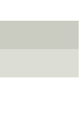

|  |  |
|||
|
|||||||||
| It’s great that you’d like to get involved in the movement and to make a difference. |
|
You can do this by becoming a surf lifesaver, getting your kids involved in our Nippers junior activities program, volunteering to be an age manager or helping out with the club barbeque on the weekend. Off the beach, you can help us fundraise, learn first aid or CPR so you can help save a life one day, or simply donate to keep lifesavers on our beaches. The possibilities are endless. By joining a club you can become a coach, official, athlete, fundraiser, supervisor for junior activity programs, committee member, radio operator, trainer and assessor, or rescue boat driver. Become a Surf Lifesaver A surf lifesaver is a trained volunteer who patrols our beaches on weekends and public holidays. Surf lifesavers take on a variety of roles including aquatic rescues, providing first aid and emergency care and educating the public about the dangers of the surf. Becoming a surf lifesaver is satisfying, fun and rewarding. You can enjoy a healthy lifestyle, be trained in aquatic rescue, make new mates, compete in surf sports events and give something back to your local community. At some point you might also help save someone’s life. To become a surf lifesaver you need to join a surf life saving club. To become a full patrolling member you will also need to obtain your Bronze Medallion qualification. To hold a Bronze Medallion you must be at least 15 and demonstrate proficiency in surf awareness, survival, patrol and rescue procedures, emergency care plus a knowledge of anatomy and physiology.Once you’ve successfully gained a Bronze Medallion and joined a club, you can wear the red and yellow uniform and proudly call yourself a surf lifesaver. Your club will assign you to a patrol team where you'll build skills and experience with the help of other qualified lifesavers. How do I join? If you already know which club you want to join, visit Lifesaving Online to become a member or talk to the club captain or administrator. If you're not sure which club would suit you best or where they are located, go to Find a Club to get started. |
| Surfing is the most blissful experience you can have on this planet, a taste of heaven. |